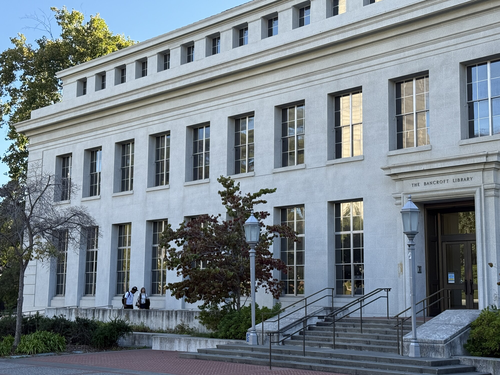
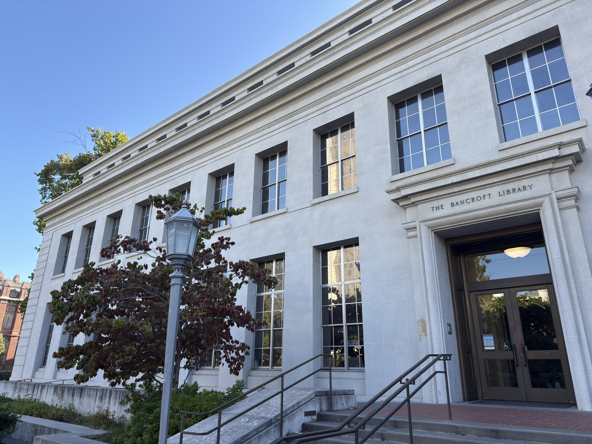
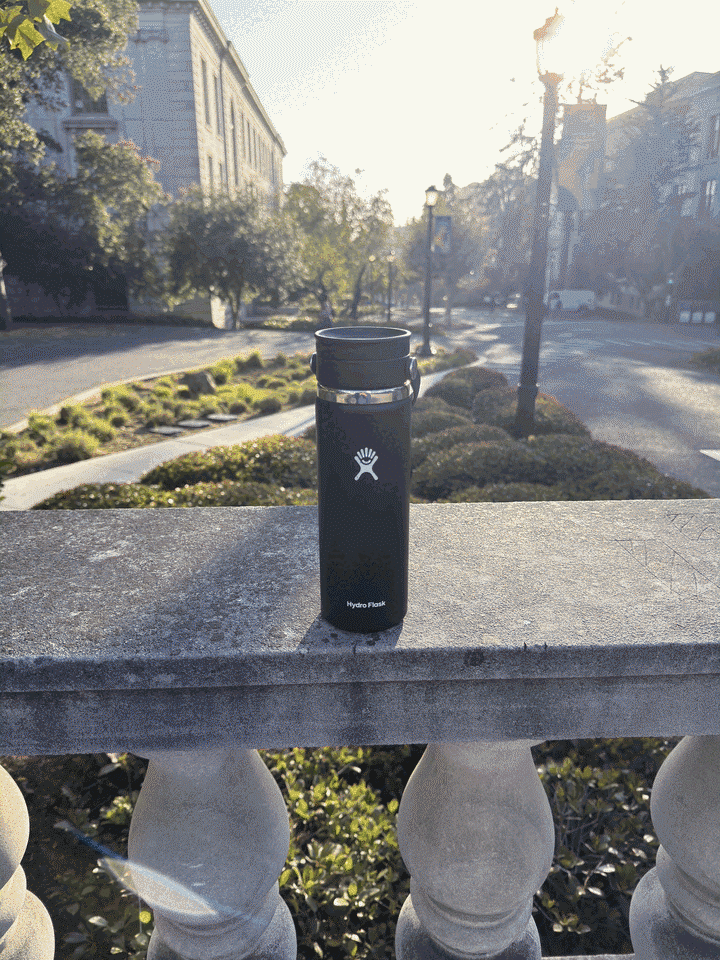

Perspective is controlled by camera position—not by focal length alone. In each comparison below, I changed my position and used zoom only to keep the subject at a similar size in the frame.
Part 1
Selfie: wrong way vs. right way
Same framing. A completely different face.


When the camera is close, my nose is much nearer to the lens than the rest of my face, so it appears disproportionately large. Stepping back makes the relative distances across my face smaller; zooming then restores the framing without restoring that close-up distortion.
Part 2
Architectural perspective compression
Distance flattens; proximity exaggerates depth.


From far away, the front and receding parts of Bancroft Library are at more similar distances from the camera, so the facade looks flatter. Near the building, those distance differences become much larger: the lines recede faster and the structure gains a stronger sense of depth.
Part 3
The dolly zoom
One bottle. Twelve steps backward. A shifting world.

How it works
I placed a water bottle on a campus balustrade, then moved the camera farther away for each still while zooming in to keep the bottle centered and nearly the same size. The changing focal length magnifies the increasingly distant background, creating the characteristic Vertigo effect.
12 stills · aligned foreground · animated GIF